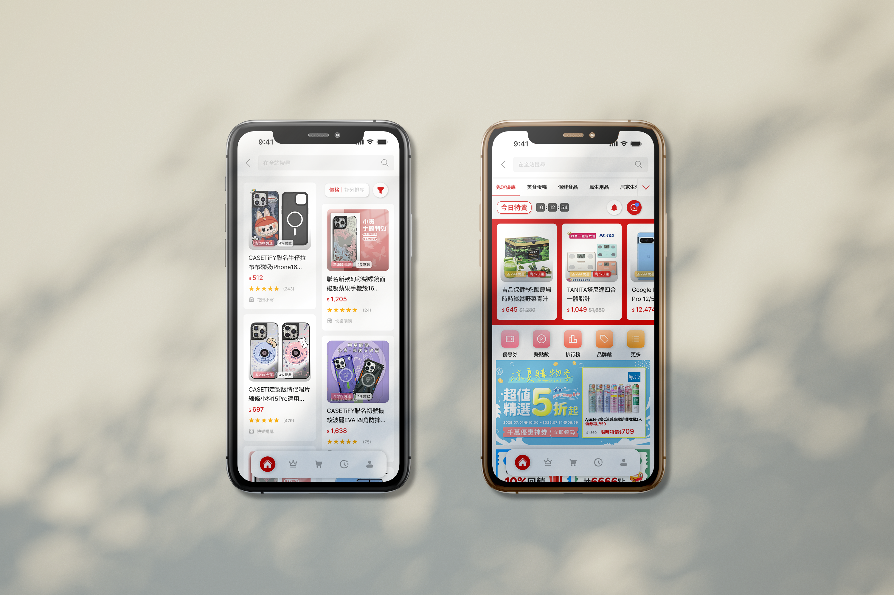
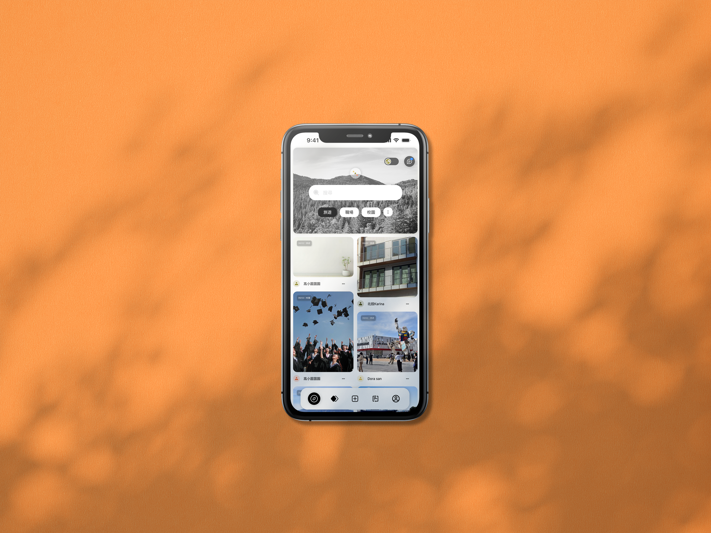
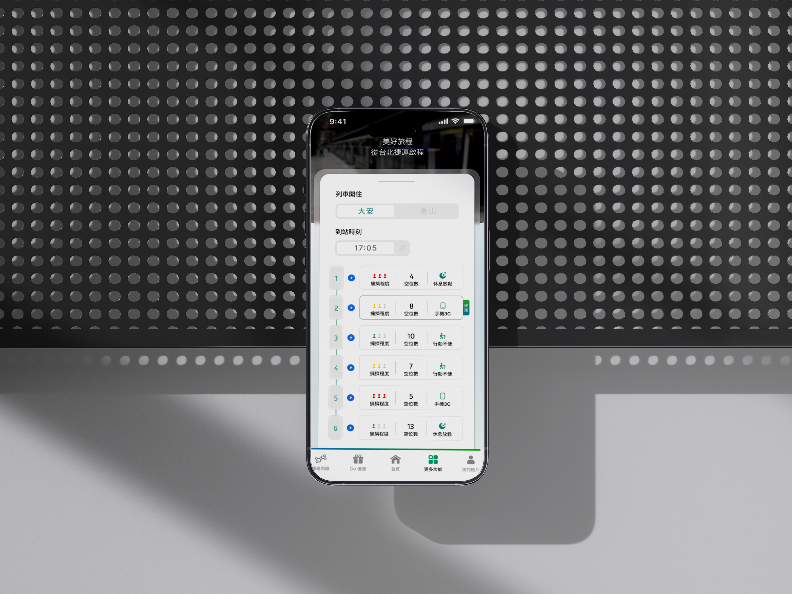

Portfolio
My personal projects cover UI/UX design, data analytics, and business strategy. Selected representative works are featured below.

Room Booking System
Developed a lightweight meeting room booking system using GAS to reduce administrative costs.

Rakuten App Redesign
Optimized the "Rakuten Market" app, streamlining user product discovery and checkout.

Appearance Anxiety Relief
"YOURSTA"—An app aimed at alleviating appearance anxiety, with rebuilding self-confidence.

Priority Seat Improvement
Optimized app and seat visual design to address young people's reluctance to use priority seats.
Predictive Model
Developing a Machine Learning Classification Model for Predicting Academic Performance.